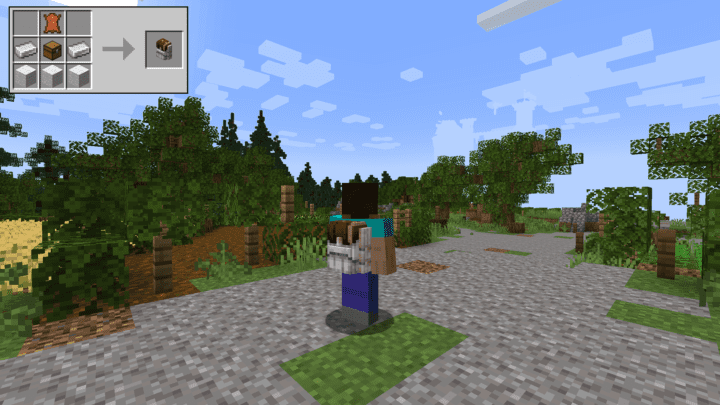

The L2 Backpack mod is a great way to improve the usage of your personal storage as well as adding a variety of backpack items to expand the space in your inventory while being able to utilize the items within those packs. The first simple, but very efficient, tweak is the ability to access a crafting table, grindstone, smithing table, stonecutter, cartography table and loom right from your existing inventory. So you no longer need to place these blocks before using them and now you can take them wherever you want and use them anywhere! This makes sense in a way given the fact that you can carry all of these blocks on you at any time so why shouldn’t you be able to use them without having the place them?
There are two main types of backpacks with this mod: the standard backpack that can be dyed any color in the game and the dimensional backpack that can also be dyed. They are essentially the same except the dimensional backpack has a bit more storage and can function as shared storage for any similar color packs you own. The key with the dimensional backpack is that it can be worn and placed as a block so you can craft two of the same color, place one down somewhere and then wear the other and those inventories will be shared. You can hold a backpack in your inventory or hotbar and still access it but you can also wear it in the chest slot and access it via a hotkey (default key is B) to drop or take items from it. You can also drag items directly into it while it’s in an inventory slot so you never need to actually open it up to add items to it. There is also an Ender backpack that functions as a portable ender chest so it is similar to the dimensional backpack but doesn’t have the ability to color lock itself to another backpack.
You can also dump all items from a backpack by holding shift and right clicking on a chest. You can then also take all of those items back by holding shift over a chest and left clicking it with the backpack in hand.
You can also combine a regular backpack with an Ender pocket to expand the storage capacity up to eight times! This can massively improve the amount of storage you can take with you wherever you want!
There are three additional packs that can also be combined into one pack that will allow you to carry multiple arrows, tools, and armor sets all within one inventory slot. So with the quiver you can wear this as a backpack or hold it in your offhand and store a bunch of different arrows that you can access and select before you shoot. While holding a bow you just need to hold sneak and select a number or scroll with your mouse to change the arrow then release sneak.
The tool swap pack functions similarly to the quiver by giving you a single source to hold all of the tools and weapons you want. While holding a tool and having the tool swap in your offhand or back you will see an option to pick another tool by holding shift and selecting a number or scrolling and then pressing R to swap the tool in your hand. This is a great way to streamline tool switching and requires much less effort to jump to the tool you need next.
And the armor swap does exactly the same as the previous two and you can store several additional armor pieces to swap whenever you want. Simply hold the pack in your offhand or on your back and with nothing in your main hand, hold shift and then R to swap armor pieces.
You can also combine all three of these packs into the combined pack and store everything in one convenient slot! So when you are wearing this pack and holding a bow, the quiver will activate. When holding any tools you will see the tool swap activate when you hold shift. And when you are holding nothing then you will see the option to swap armor pieces while holding shift.